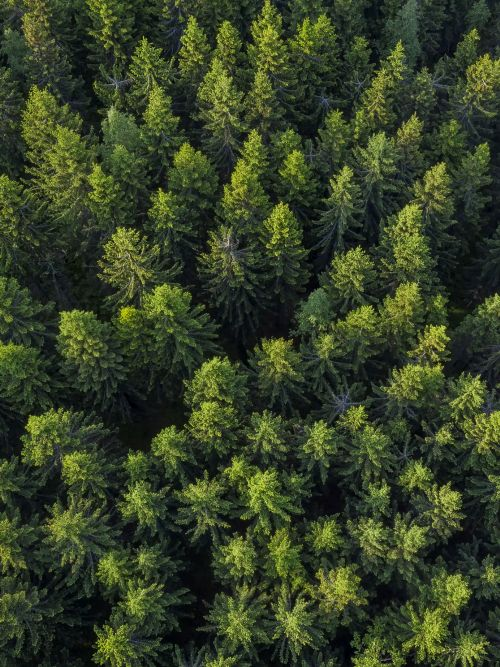

Lahjoita
Anna villille luonnolle mahdollisuus säilyä villinä
Lahjoituksesi auttaa muuttamaan tutkimustiedon ja suojelusuunnitelmat käytännön toiminnaksi.
ARTEMIS käyttää lahjoitusvaroja luonnonsuojeluhankkeiden ja tutkimuksen rahoittamiseen, ympäristökasvatukseen sekä toimintaan, jonka kautta ihmiset voivat osallistua luonnonsuojeluun.
Valitse lahjoitussumma
Kuukausi- vai kertalahjoitus?
Yhteystiedot
Lähetettyäsi lahjoitustoiveen, saat sähköpostiisi vahvistusviestin ja jatko-ohjeita.
Mihin lahjoituksia käytetään?
Luonnonsuojeluun
Rahoitamme hankkeita, joiden tavoitteena on suojella villieläimiä, luonnon monimuotoisuutta ja arvokkaita elinympäristöjä.
Tutkimukseen
Tuemme tutkimusta, joka lisää tietoa luonnon tilasta, siihen kohdistuvista uhista ja suojelutoimien vaikuttavuudesta.
Tietoon ja koulutukseen
Tuotamme tutkimukseen perustuvaa materiaalia ja koulutusta, joiden avulla ihmiset voivat tehdä luonnon kannalta parempia päätöksiä.
Yhteiseen toimintaan
Järjestämme vapaaehtoistoimintaa ja tapahtumia, joissa ihmiset voivat osallistua konkreettisesti oman ympäristönsä suojelemiseen.
Tiedä mitä tuet
Luottamus edellyttää läpinäkyvyyttä. Siksi ARTEMIS raportoi avoimesti lahjoitusvarojen käytöstä, rahoitetuista hankkeista ja niiden tuloksista.
Kerromme myös silloin, kun hankkeen vaikutuksista ei vielä ole riittävästi tietoa. Luonnonsuojelussa lupauksia tärkeämpiä ovat mitattavat tulokset.
